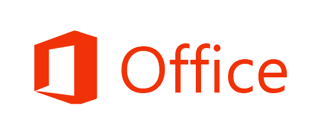
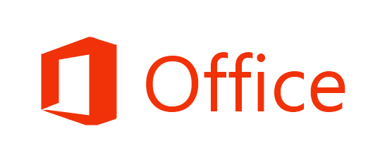

Portfolio

NIVEAU 1
Présentation
"Nous faisons tous des choix, mais en réalité, ce sont ces choix qui nous font."
- «Bioshock 2»,
2010
Actuellement étudiant en 2ème année de licence informatique à Sorbonne Université, je suis à la recherche
d'un stage de 3 mois, qui peut débuter en mars 2024 et d'une alternance pour l'année 2024/2025, dans le but de
concrétiser mes compétences et de jouer un rôle actif au sein de projets innovants.
J'ai fait le choix de faire de l'informatique, car passionné depuis le plus jeune âge, je trouve une
satisfaction particulière au fait de découvrir constamment de nouvelles notions dans un
domaine en constante évolution, et de mettre en pratique des connaissances acquises au fur et à mesur du
temps.
Voici quelques-unes de mes principales compétences, en particulier mes compétences non techniques, communément appelées "Soft Skills" :


Une étoile est cachée quelque part, trouvez la et appuyez dessus afin d'accèder au niveau 2 !
Indice : Soyez créatifs !
Vous ne trouvez pas ?NIVEAU 2
Formations & Compétences
LICENCE INFORMATIQUE
- Licence générale en informatique parcours en apprentissage
- Sorbonne Université - Faculté des Sciences et Ingénieurie
- Unités d'enseignement : Développement Web - Système d'exploitation et Shells - Programmation Orientée Objet - Langage C avancé - Programmation fonctionnelle - Mathématiques Discrètes - Structure de données - Bases de données
2023 - 2024
PORTAIL SCIENCES FORMELLES
- Cycle d'intégration (bac +1)
- Sorbonne Université - Faculté des Sciences et Ingénieurie
- Unités d'enseignement : Eléments de programmation - Analyse - Algèbre - Probabilités - Mécanique des solides et fluides- Thermodynamique - Anglais
2022 - 2023
BACCALAURÉAT SCIENTIFIQUE
- Diplôme spécialisé en sciences
- Mention bien
- Options : Mathématiques / Physique / SVT
- Lycée Sahoui Aldjia
2021 - 2022
Avant de réaliser un projet, il faut d'abord débloquer les compétences requises.
Pour accéder au prochain niveau, vous devez d'abord résoudre cette énigme qui vous permettera d'avoir la clé pour ouvrir le coffret des compétences :
Quand tu m'as, tout s'ouvre devant toi,
Je suis petite, mais ma puissance est là.
Le prisonnier espère, en moi, trouver la libérté,
Qui suis-je donc, dans cette énigme présentée ?
Indice : La réponse est sous vos yeux !
Vous ne trouvez pas ?


 



Bravo !
vous avez maintenant débloqué les compétences requises pour accéder au niveau 3.
NIVEAU 3
Projets universitaires
Dans cette section, vous allez retrouver divers projets universitaires que j'ai réalisé, avec pour chacun un lien correspondant vers GitHub
Projet Vélo
Mise en oeuvre des concepts et méthodes de mécanique physique, en s'appuyant sur le langage de programmation python
- Evolution mécanique d'un cycliste (Puissance développée, Transmission des forces...)
- Traitement et visualisation des données (Numpy, Matplotlib)
- Soutenance et présentation finale du projet
Projet Automates
Etude des automates finis et langages, en se basant sur le langage de programmation python
- Utilisation du logiciel JFLAP
- Création, détérminisation et minimisation d'automates
Projet Portfolio
Création d'un portfolio en ligne en utilisant différent langages dédiées au web
- Création d'une page web responsive avec BootStrap
- Utilisation de html, css, javascript
Projet Ecosys
Simulation d'un écosysteme "Proies-Prédateurs", en utilisant le langage C
- Structure de données sous forme de liste chainées
- Manipulation de fichiers
- Simulation et évolution du monde de l'écosysteme
- Représentaion graphique avec GnuPlot
NIVEAU FINAL
Contact
Félicitation ! vous êtes maintenant au niveau final et vous pouvez désormais me contacter via les liens ci-dessous :